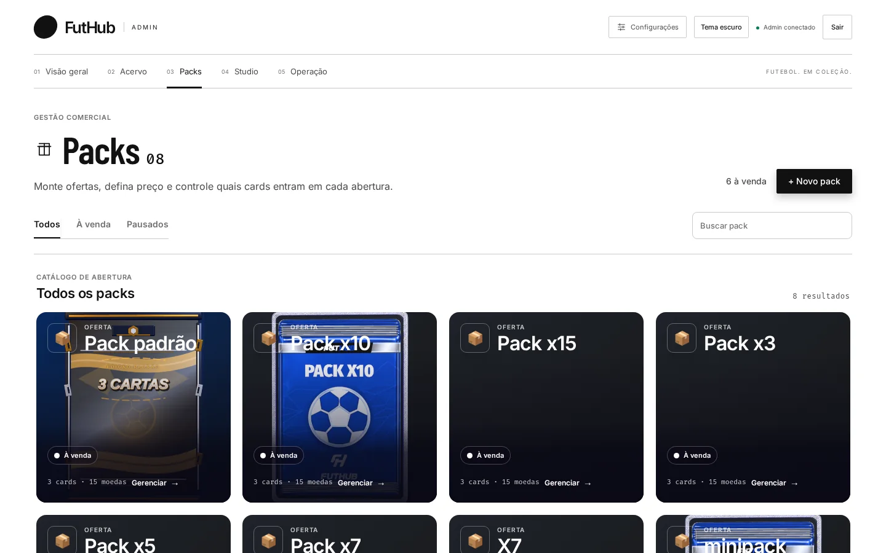
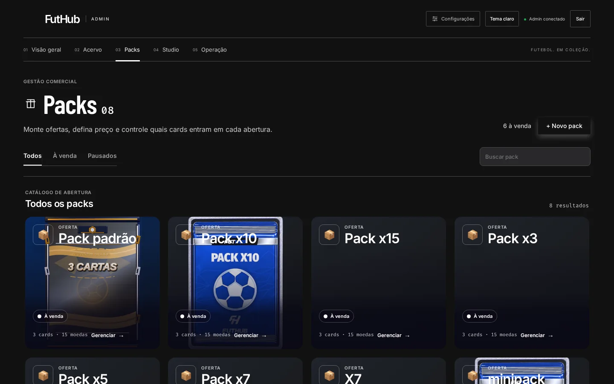
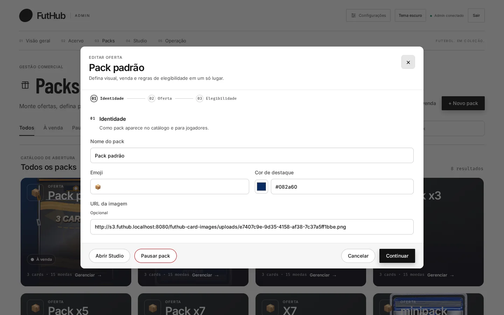

Início / Recursos / Gestão de packs
04 · Gestão comercial
Você decide o que sai em cada pack.
Um pack combina uma oferta (quantas cartas, por quantas moedas, quantas vezes por jogador) com uma regra de elegibilidade (quais cards podem sair). Os dois se editam no mesmo lugar, e o pack pode ser pausado sem ser apagado.


Como funciona
Três etapas por pack.
01 Identidade. Nome, emoji, cor de destaque e imagem do pack.
02 Oferta. Cartas por pack, preço em moedas, limite por jogador e se o pack está à venda ou pausado.
03 Elegibilidade. Faixa de overall e listas de incluir ou bloquear por posição, coleção, time ou card específico.
Para mudar a arte, “Abrir Studio” leva direto ao Studio de packs.

Sem o painel
- Mudar o preço de um pack exige mexer no banco
- Um pack temático pode sortear cards de qualquer coleção
- Tirar um pack do ar pode significar apagá-lo
Com o painel
- Preço, quantidade e limite mudam num formulário
- A elegibilidade restringe por coleção, time, posição e overall
- “Pausar pack” tira da loja e mantém a configuração